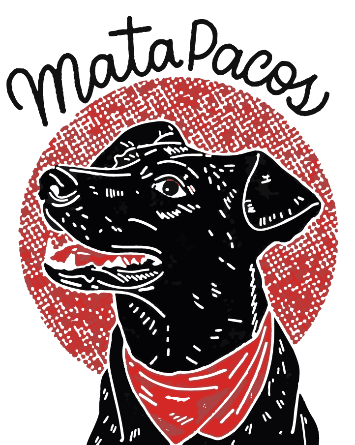
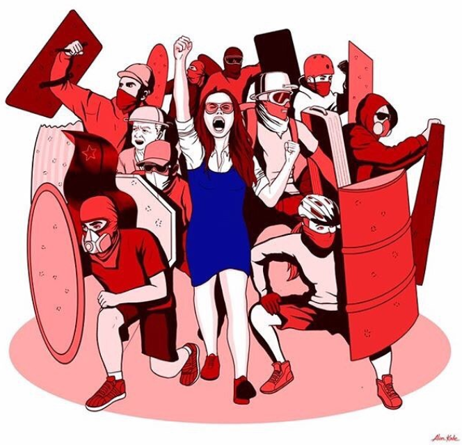
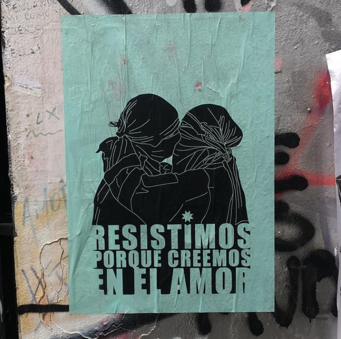
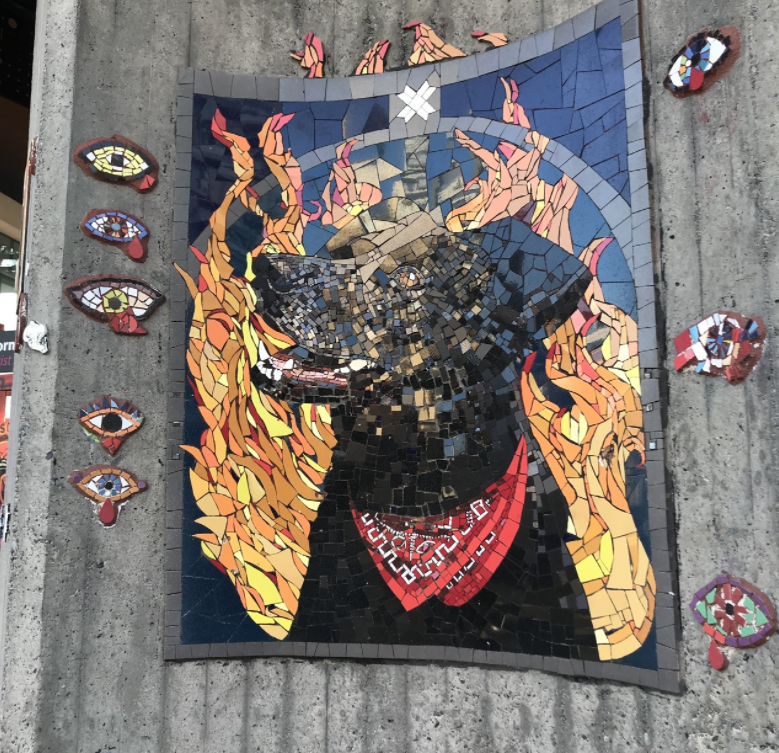
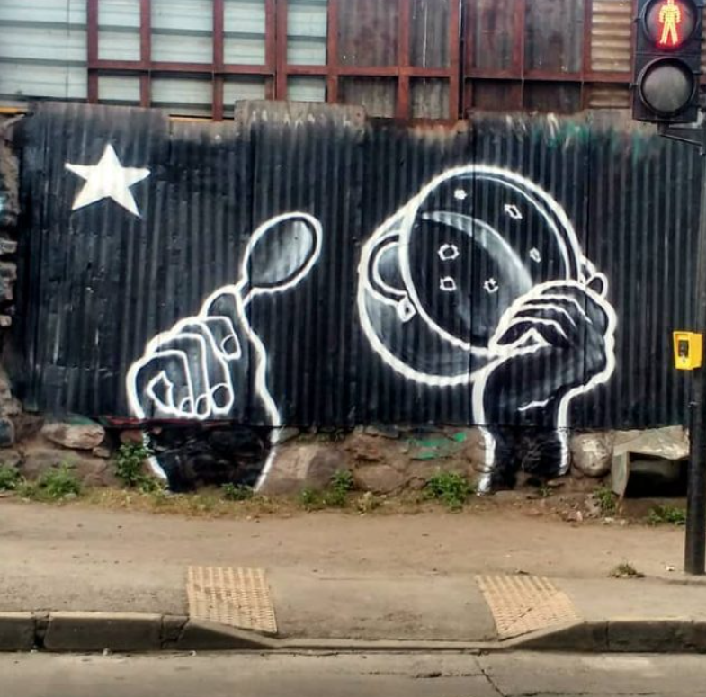

DISEÑO Y GRÁFICA POLÍTICA


El estallido social fue una expresión ciudadana nacida desde las emociones y sentimientos. Durante las semanas posteriores pudimos observar una gran producción de contenido gráfico que mostraban el descontento al gobierno.




ILUSTRACION
El internet y las redes sociales cumplieron un rol fundamental a la hora de difundir imágenes provenientes de todo Chile. Diversos ilustradores chilenos y de otros países hicieron ilustraciones con el fin de desmostrar el apoyo al descontento que se estaba manifestando.CARTEL
Entendiendo el cartel como un papel impreso, durante el estallido social pudimos observar diversas técnicas a la hora de diseñar e imprimir un cartel político, como la serigrafía, el collage e incluso las mismas ilustraciones de internet.INTERVENCIÓN
Hubieron diversidad de intervenciones en el espacio público, pasando por el teatro, los mozaicos, gigantografías y proyecciones. Dentro del contenido gráfico en torno a las intervenciones podemos destacar el uso de tecnicas de fotomontaje, collage, murales e intervenciones con tipografías.GRAFFITI
Los graffitis no fueron la excepción al momento de manifestar descontento en las calles. Estos han estado en las calles del país desde hace años, y durante el estallido social en Chile se hicieron aun más presentes en las calles.